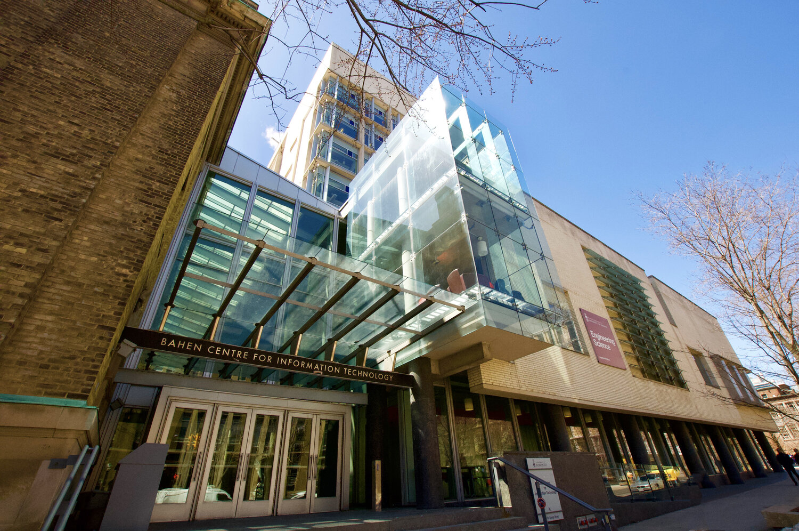
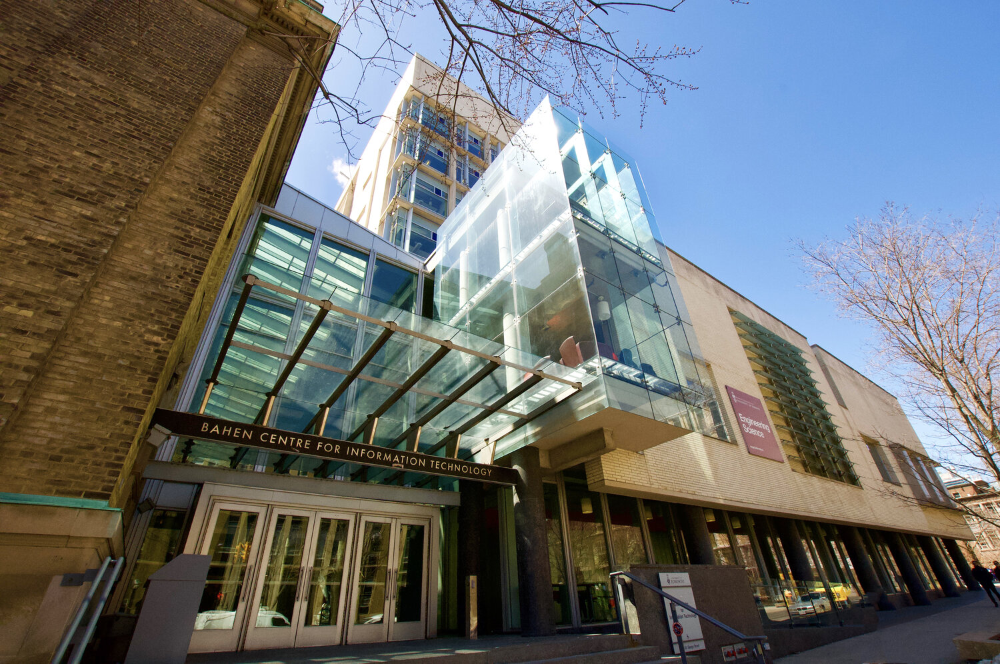

Ontario Secondary School Diploma
01. Six 4U/M courses, including:
02. Calculus and Vectors (MCV4U)
03. English (ENG4U)
Ontario Secondary School Diploma
01. Five 4U/M courses, including:
02. Advanced Functions (MHF4U)
03. Calculus and Vectors (MCV4U))
04. Chemistry (SCH4U)
035. English (ENG4U)
06. Physics (SPH4U)
In the first year of the University of Toronto, I might take:
Introduction to Computer Science: This course introduces students to the fundamentals of programming using a high-level language such as Python. Topics covered may include data types, control structures, functions, recursion, and basic algorithms.
Introduction to Computer
Programming: This course covers more advanced programming topics such as object-oriented programming, data structures (e.g., lists, stacks, queues, trees), and algorithm analysis.
Calculus I: This course covers differential calculus, including limits, continuity, derivatives, and their applications.
Linear Algebra I: This course introduces students to the fundamental concepts of linear algebra, including vectors, matrices, systems of linear equations, and basic linear transformations.
Discrete Mathematics: This course covers foundational concepts in discrete mathematics, including logic, proof techniques, set theory, relations, functions, combinatorics, and graph theory. It provides the mathematical background necessary for further studies in computer science.
1. Course Requirements: Complete all required courses for the Computer Science program. These courses typically cover a range of topics including programming, algorithms, data structures, software engineering, theory of computation, artificial intelligence, and more.
2. Credit Requirements: Meet the credit requirements set by the university. This typically involves completing a certain number of credits, which may include both Computer Science courses and courses from other disciplines as per the program's requirements.
3. GPA Requirements: Maintain a satisfactory Grade Point Average (GPA) throughout your studies. The specific GPA requirements may vary depending on the program and university policies.
4. Capstone Project or Thesis: Some programs may require completion of a capstone project or thesis, where students work on a substantial research or software development project under the supervision of a faculty member.
5. Extracurricular Activities: Participate in extracurricular activities such as internships, co-op placements, research opportunities, hackathons, and student clubs related to Computer Science. These experiences can enhance your learning and make you more competitive in the job market.
 
